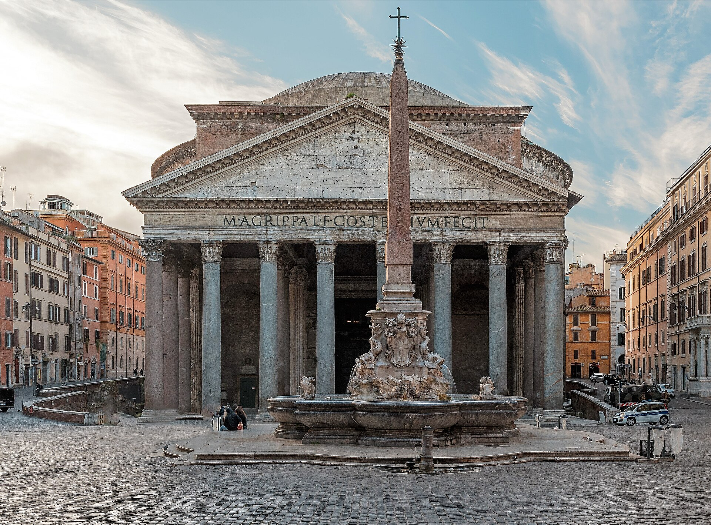
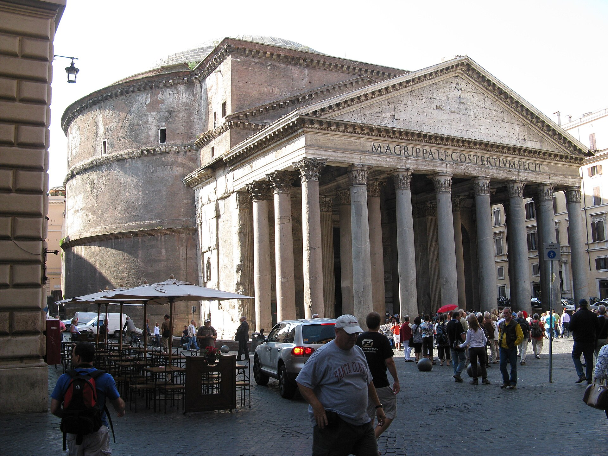
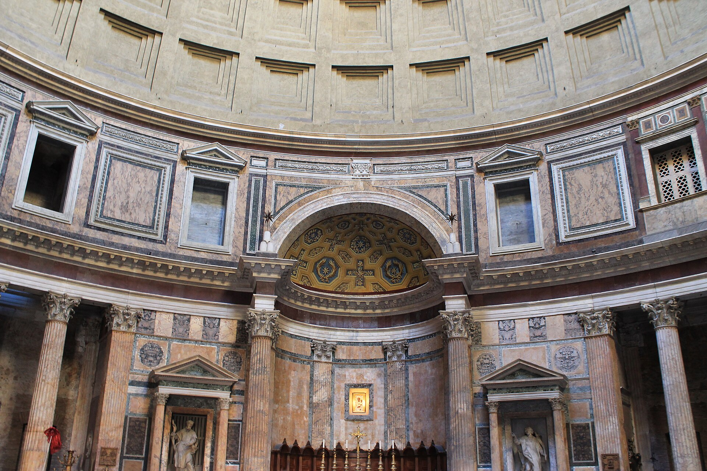

Dome
A curved roof or ceiling, often shaped like half of a sphere. At the Pantheon, a huge concrete dome covers the round room without a row of columns breaking up the space.
Artist unknown · Rome, 118–128 C.E. · Campus Martius


This side view makes the building’s two-part design unmistakable: a Greek-looking temple porch of columns and pediment in front, attached to the Roman rotunda—an enormous cylindrical drum built to carry a dome.
The Pantheon shows what a building can make you feel. You pass through the deep porch and enter a huge round room. Above you, a massive concrete dome has a round opening to the sky at its center. The room is about 43 meters wide and about 43 meters high to the oculus. It can feel like a complete sphere has been set inside a cylinder.
The building was rebuilt during the reign of Hadrian, probably between 118 and 128 C.E. Its front inscription, however, names Marcus Agrippa, who paid for an earlier temple on the same site. That choice connects Hadrian’s new building to Rome’s older past—and lets the emperor borrow some of its authority.
Look up and the dome becomes a careful pattern. Its sunken square panels, called coffers, lead your eye toward the oculus. They also take away some material from the ceiling. Light, weather, and the changing sky enter through the open center, so the interior changes throughout the day.
A curved roof or ceiling, often shaped like half of a sphere. At the Pantheon, a huge concrete dome covers the round room without a row of columns breaking up the space.
Latin for “eye.” In architecture, a circular opening. The Pantheon’s oculus opens the dome directly to the sky and is its major source of light.
Sunken panels in a ceiling or vault. The Pantheon’s five rings of coffers make the dome’s shape easier to see and take away some of its weight.

Each ring of coffers grows smaller as it rises, making the ceiling seem to recede farther than it does. The oculus is not a window with glass: it is a true opening that brings daylight and rain into the building.
The Pantheon kept shaping buildings long after ancient Rome. At Hagia Sophia, builders will create another huge domed interior, using a different system to make the dome seem to float. In Renaissance Florence, Brunelleschi’s dome takes on the challenge of covering a huge space. At Palladio’s Villa Rotonda, a central dome and temple-like porches bring Roman ideas into a country house. Across all three decks, look for how later architects borrow the Pantheon’s shape, light, and feeling of power—then make those ideas their own.